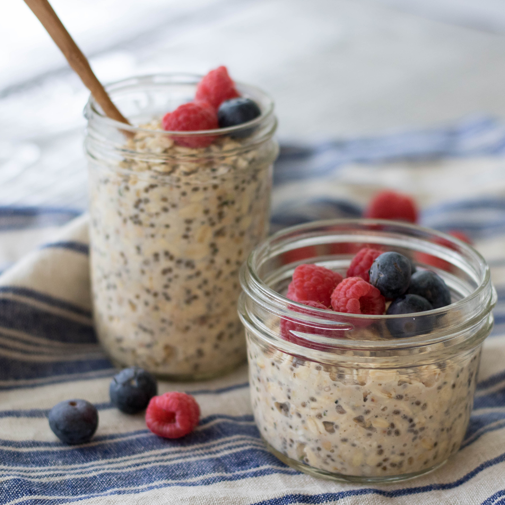

Overnight Oats

Personal recipe
Ingredients
- Old Fashion Oats
- Cinnamon
- Yogurt (anykind of yogurt you prefer)
- Honey
- Milk
- Blueberrys
- a Mason Jar
Steps
- Pour oats in mason jar
- Pour in a small amount of cinnamon
- Add in blueberrys
- Add a decent amount of yogurt
- add 1 cup milk (you can put more or less)
- Mix
- Store in fridge or eat as is